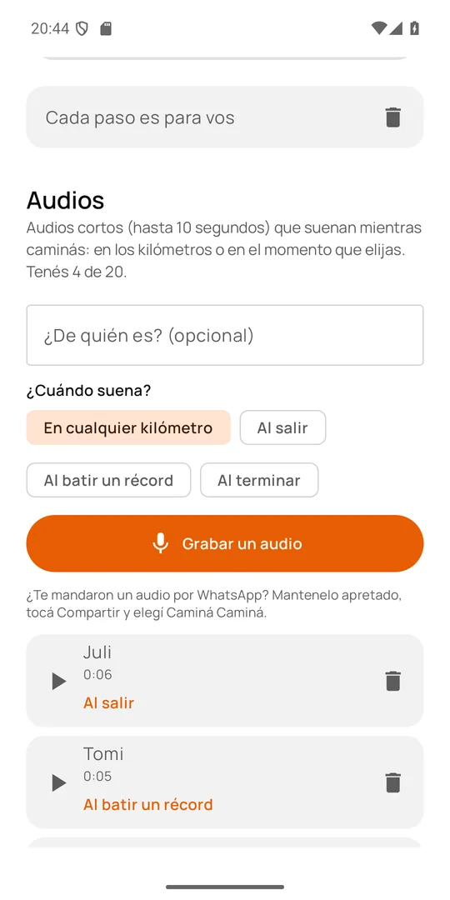
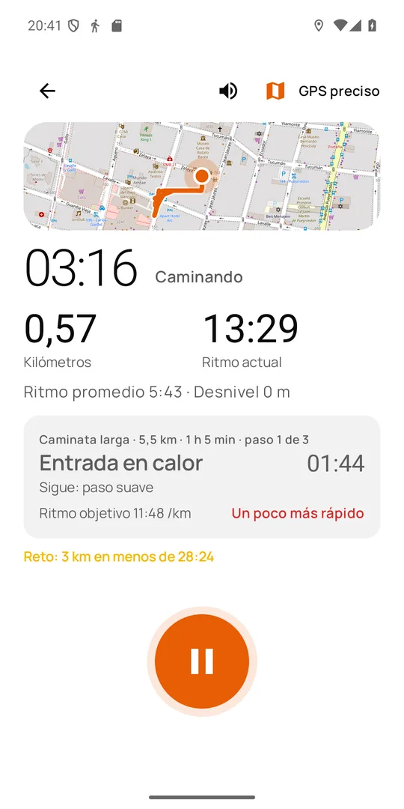
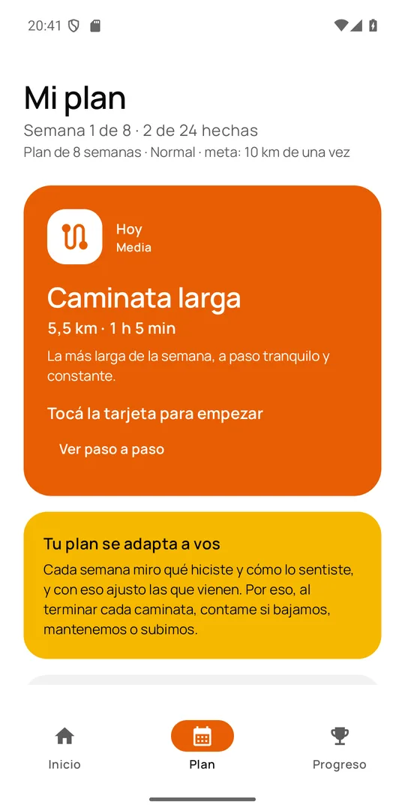
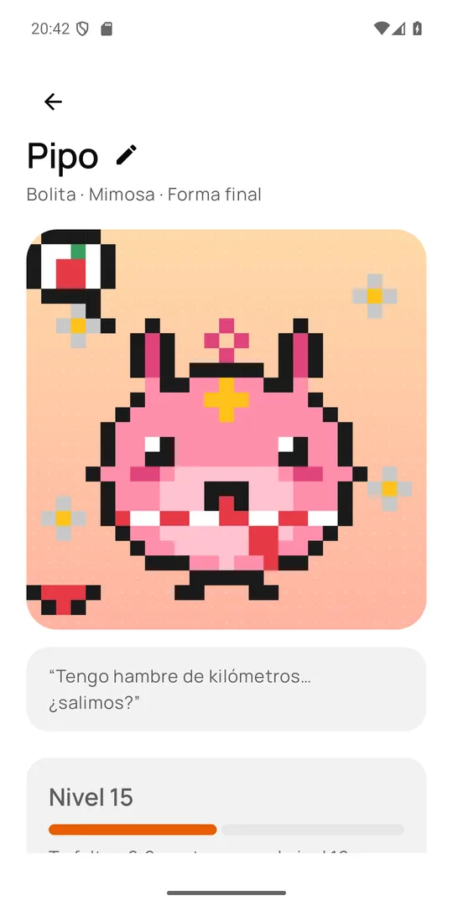
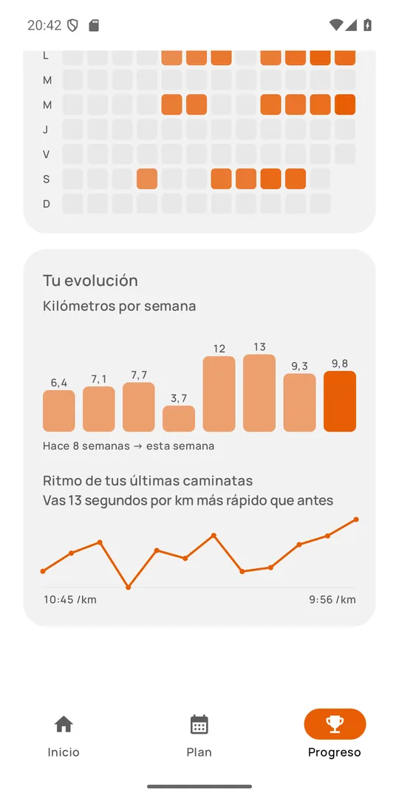
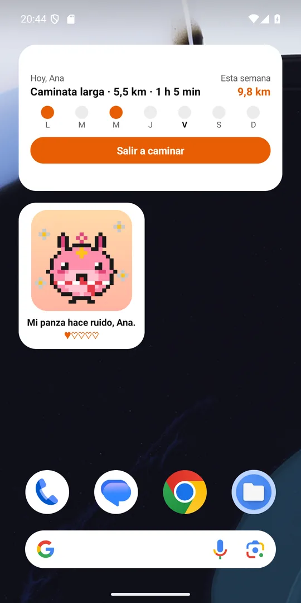

Para caminar con constancia, sin complicarse
Registra tus caminatas con GPS, te va hablando en el camino y te arma un plan que crece de a poco. Y te va regalando cosas a medida que avanzás.
Tu caminata en vivo
Distancia, tiempo, ritmo y el recorrido sobre el mapa. La voz te avisa los kilómetros y cuándo cambiar de tramo.
Viajes
Elegí un destino y acercate caminata tras caminata: una ciudad del mundo o un recorrido famoso como el Camino de Santiago o la Ruta 40.
Tus pasos
Cuenta los pasos de cada caminata con el sensor del teléfono, sin gastar batería. Los ves en vivo, en el resumen y en tu progreso.
Programas para elegir
30 minutos diarios, caminata japonesa, tus primeros 5 km, la media maratón o preparar el Camino de Santiago. O armás el tuyo, y se ajusta según cómo te va.
La voz de tu gente
Audios cortitos de tus hijos, tus nietos o tuyos, que suenan mientras caminás.
Vencé tu récord
Tus mejores marcas en 1, 2, 3, 5 y 10 km, y cada tanto un reto a tu medida.
Una mascota que crece
Nace con tu primera caminata y come kilómetros. Nunca se enferma: si no salís, duerme y te espera.
En tu pantalla de inicio
Un widget con lo que toca hoy y otro con tu mascota, para salir a caminar con un toque.

Que te acompañe la voz de los que querés
Lo que más les gusta a quienes la usan.
- Grabá audios de hasta 10 segundos, o pediles a tu familia que te los manden por WhatsApp y compartilos con la app.
- Recortalos para que suene solo lo que querés escuchar.
- Elegí cuándo suena cada uno: en los kilómetros, al salir, al batir un récord o al terminar.
- Sumá también tus propias frases. Lo tuyo siempre va primero.
Así se ve
Deslizá para ver más.





Tus datos son tuyos
Sin cuentas, sin servidores y sin vueltas.
Tus caminatas, tu plan y tus audios se guardan ahí y no se mandan a ningún lado.
Nunca: ni carteles, ni videos, ni audios vendiendo algo mientras caminás. Tampoco herramientas de seguimiento.
Guardá todo en un archivo, audios incluidos, y recuperalo si cambiás de teléfono.
Preguntas frecuentes
Si no encontrás lo que buscás, escribime.
¿Cuánto cuesta?
Nada. Es gratis y no tiene publicidad.
¿Cómo paso a la app un audio que me mandaron por WhatsApp?
En WhatsApp, mantené apretado el audio, tocá Compartir y elegí Caminá Caminá. Ahí lo escuchás, lo recortás si querés, le ponés de quién es y elegís cuándo suena.
¿Qué programas hay?
En Plan elegís uno: Empezar a caminar (6 semanas), 30 minutos diarios (elegís los minutos, los días y el ritmo, y es siempre igual), Caminata japonesa (cinco veces 3 minutos rápido con 3 suaves entre medio), Mis primeros 5 km, 10 km caminando, Media maratón caminando (16 semanas) y Preparar el Camino de Santiago (con dos caminatas largas seguidas el fin de semana). También podés armar el tuyo. Y si salís sin plan, podés ponerte un objetivo por tiempo, por distancia o de ida y vuelta.
¿Cómo funcionan los viajes?
En Progreso → Viajes elegís un destino: una ciudad (la distancia es en línea recta desde donde estás) o un recorrido famoso, como el Camino Inca, el Camino de Santiago, el Muro de Adriano o la Ruta 40, con sus paradas. Cada caminata suma, y al terminar la voz te dice cuánto falta o a qué parada llegaste. Podés ver el camino en el mapa y compartir tu avance. Es opcional.
¿Cuenta los pasos?
Sí, con el contador de pasos del teléfono, el mismo que usan las apps de salud. Solo durante la caminata, y los pasos quedan en tu teléfono. Si no diste el permiso, lo activás en Ajustes → Contar pasos.
¿Por qué pide la ubicación?
Para medir la caminata: distancia, ritmo y recorrido. La usa solo mientras caminás, con un aviso a la vista. Para el clima usa una zona aproximada, y eso se puede apagar.
¿Sirve si nunca hice ejercicio?
Sí. El plan arranca suave y se adapta a cómo te sentís. Si tenés algún problema de salud, consultá con tu médico antes de empezar.
¿Hay que trotar?
No. Es una app para caminar: los entrenamientos y los retos son todos caminando, a tu ritmo.
¿Qué pasa si se apaga la pantalla mientras camino?
La caminata sigue. Pero algunos teléfonos, para ahorrar batería, frenan las apps cuando la pantalla está apagada, y la caminata puede cortarse o medir mal. Por eso la app te pide una vez quitarle esa restricción. Si no lo aceptaste, lo podés hacer cuando quieras desde Ajustes → Batería.
¿Y si cambio de teléfono?
Desde Ajustes guardás una copia de seguridad en un archivo y la recuperás en el teléfono nuevo, con tus caminatas, tu mascota y tus audios.
Quién la hace
Soy Pablo, licenciado en Informática y máster en Ingeniería de Software, de Argentina. Hice Caminá Caminá para Laura, para que salir a caminar fuera un rato lindo y no una obligación. Hoy la usan más personas, y la sigo mejorando con lo que me cuentan.
¿Dudas, ideas o algo que no anda?
Leo todos los mensajes.